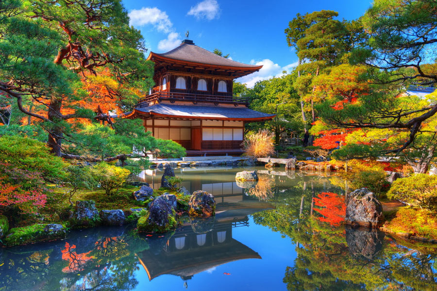

Kyoto: Il Cuore Pulsante del Giappone dei Samurai Kyoto non è semplicemente una città, ma un portale temporale. Capitale imperiale del Giappone per oltre mille anni, conserva intatta l'atmosfera dell'epoca feudale. Camminare tra i suoi templi silenziosi, le storiche case in legno machiya e le fortezze dello Shogun significa ripercorrere gli stessi passi dei leggendari guerrieri samurai, scoprendo il perfetto connubio tra l'arte letale della spada e la filosofia Zen.
Kyoto: Molto più di un semplice pezzo di storia
Mentre Tokyo corre nel futuro tra neon e grattacieli, Kyoto custodisce l'anima "action" del Giappone. Per secoli è stata il centro del potere e il campo di battaglia dei clan di samurai più temuti di sempre. La cosa migliore? È rimasta praticamente intatta, pronta per essere esplorata.
perché è la meta definitiva? se ami i samurai.
La paranoia eletta a capolavoro architettonico 🐦
Nel XVII secolo, governare il Giappone significava guardarsi continuamente alle spalle dal rischio di una lama nel sonno. La soluzione dello Shogun alla sua paranoia cronica? Il celebre "pavimento dell'usignolo" del Castello di Nijo, progettato per cigolare acusticamente a ogni minimo passo e sventare assassinii notturni. Un sistema d'allarme decisamente analogico, che potrete testare di persona (se avrete il coraggio di sfidare la vostra coordinazione).
Esteti della spada: tra alta cultura e pragmatica violenza ⚔️
I samurai di Kyoto non erano rozzi mercenari, ma costituivano la vera élite intellettuale del Paese. Questa classe di guerrieri dedicava la stessa cura ossessiva alla rigorosa estetica della cerimonia del tè e alla scrittura di delicati componimenti poetici (haiku) che riservava alle tecniche di combattimento sul campo di battaglia. Un livello di dissociazione emotiva che oggi offrirebbe pane per i denti a qualsiasi psicologo, ma che all'epoca rappresentava l'apice della virtù e della stabilità mentale.
Quando i danni strutturali diventano patrimonio storico 🪵
Dimenticate i musei asettici con i cartelli "vietato toccare". Presso la storica Casa Yagi, le travi del soffitto mostrano ancora i profondi solchi lasciati dalle katane durante i regolamenti di conti della milizia Shinsengumi. La dimostrazione che, a volte, una mancata ristrutturazione edilizia può trasformarsi in un'eccellente attrazione turistica.
La Via del Guerriero (In 4 comode tappe)
Pianificare un viaggio a Kyoto senza una strategia precisa è il modo più rapido per finire a vagare tra negozi di souvenir turistici sperando in un miracolo. Abbiamo elaborato un percorso tattico in quattro tappe per farvi vivere la città come veri guerrieri, ottimizzando i tempi ed evitando inutili dispersioni.
IterarioDichiara la tua Alleanza (O chiedi informazioni)
Se avete domande, volete prenotare il vostro viaggio a Kyoto o semplicemente contestare le nostre scelte storiche, evitate i metodi di comunicazione feudali. Abbiamo predisposto un canale decisamente più moderno: vi basterà inserire il vostro nome, la mail e selezionare il motivo del vostro contatto dal menu a tendina per mettervi in comunicazione con il nostro clan.
Contatti